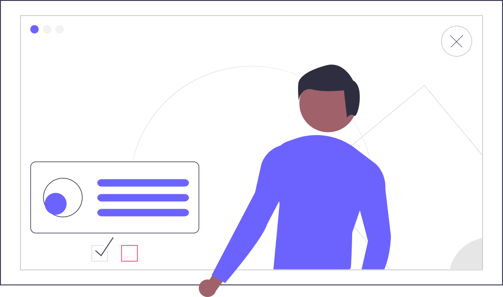

Paulo Vieira
SOBRE
Olá, me chamo Paulo Vieira. Sou um desenvolvedor backend com sólida experiência em sistemas web. Sou formado em Análise e Desenvolvimento de Sistemas pela Universidade UNINTER e atuo como desenvolvedor de aplicações na IBM BRASIL.

DETALHES
- Linguagens de programação
- Atuo principalmente com Java com Spring Boot. Porém, atuo também com Kotlin e Javascript. Já atuei profissionalmente com C# utilizando o framework .NET Core.
- Experiências
- Atuei na empresa Nyx Soluções como desenvolvedor fullstack, trabalhando com Java e Angular. Atualmente atuo na IBM Brasil como desenvolvedor backend, trabalhando com Java e Spring.
- Expectativas
- Estou sempre em busca de novos desafios e oportunidades para aprender e crescer profissionalmente. Estou sempre disposto a ajudar e aprender com os colegas de trabalho. Tirar certificações em cloud como AWS e Azure.
